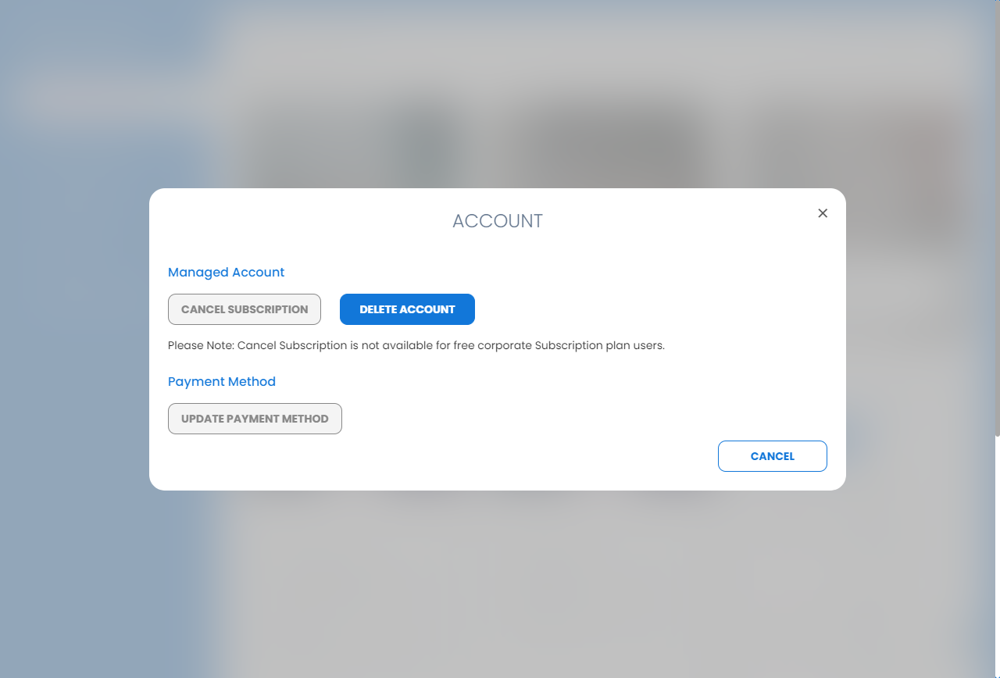
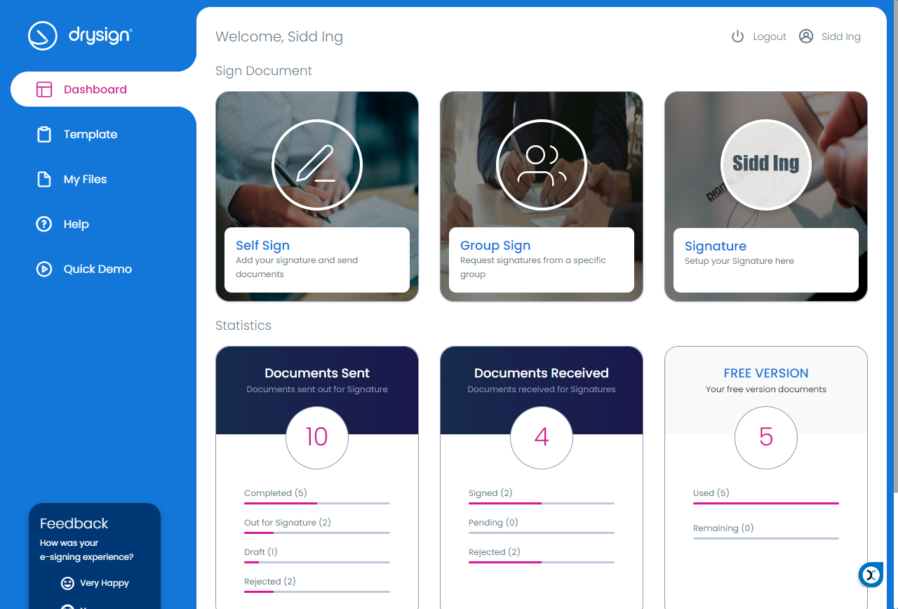
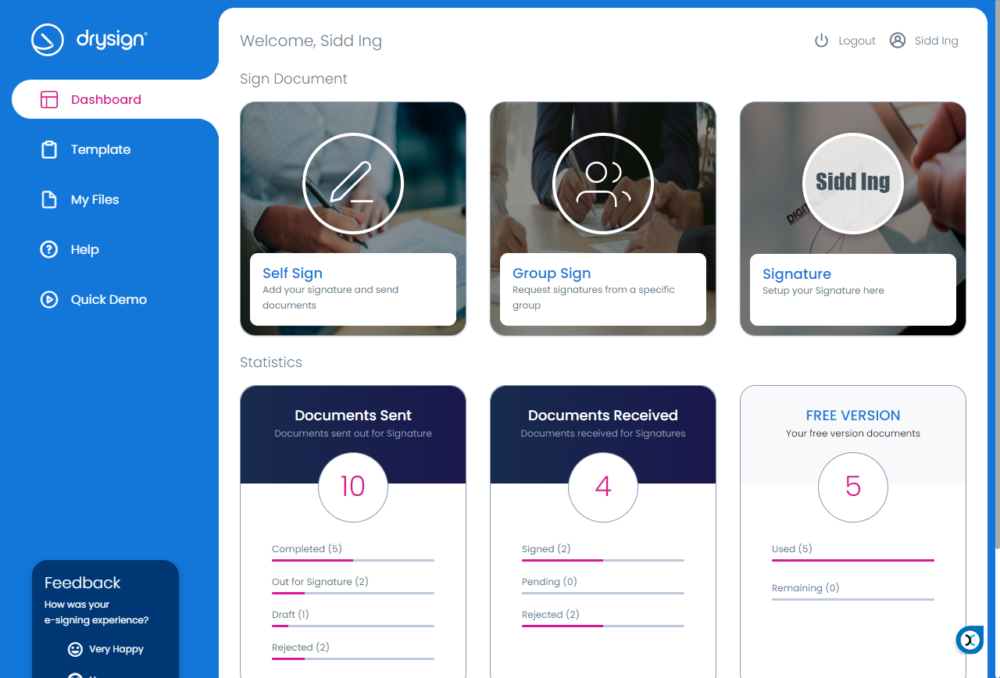

-
DMR Regression Suite Set-1
0h 10m 4s+981ms
07:39:56 AMDMR Regression Suite Set-1
09.17.2021 07:39:56 09.17.2021 07:50:01 0h 10m 4s+981msLogin Verification with valid credentialsGiven navigate to given URL "https://dmr-qa.exela.global/#/"Then enter username as "septclient"Then click on next buttonThen enter Password as "Pa$$w0rd"And click on signin buttonThen titile of the page should be "Exela DMR"Then Click on profile pictureAnd logoutLogin Verification with Invalid credentialsGiven navigate to given URL "https://dmr-qa.exela.global/#/"Then enter username as "septclien"Then click on next buttonThen enter Password as "test@12"And click on signin buttonThen System should throw a toggle message as "Invalid username/password"Validate with Invalid passwordGiven navigate to given URL "https://dmr-qa.exela.global/#/"Then enter username as "septclien"Then click on next buttonThen enter Password as "test@124"And click on signin buttonThen System should throw a toggle message as "Invalid username/password"Validate with Incorrect UsernameGiven navigate to given URL "https://dmr-qa.exela.global/#/"Then enter username as "testcli10"Then click on next buttonThen enter Password as "Test@321"And click on signin buttonThen System should throw a toggle message as "Invalid username/password"Ensure show Password icon in Login screenGiven navigate to given URL "https://dmr-qa.exela.global/#/"Then enter username as "septclient"Then click on next buttonThen enter Password as "Pa$$w0rd"Then Click on show password iconThen password should be visibleStep skippedBase.waitToPageRender(Scenario)Step skippedBase.closeBrowser(Scenario)Validate details under the DashboardGiven navigate to given URL "https://dmr-qa.exela.global/#/"Then enter username as "septclient"Then click on next buttonThen enter Password as "Pa$$w0rd"And click on signin buttonThen click on toggle menuThen click on left pane menu "Dashboard"Then total mail should be enabledThen opened mail should be enabledThen un opened mail should be enabledThen Click on profile pictureAnd logoutView Mail action distribution graph under DashboardGiven navigate to given URL "https://dmr-qa.exela.global/#/"Then enter username as "septclient"Then click on next buttonThen enter Password as "Pa$$w0rd"And click on signin buttonThen click on toggle menuThen click on left pane menu "Dashboard"When click on "Mail Action Distribution" dropdown optionThen system should display graph filter options as "All, Last Week, Last 15 Days, Last 30 Days, Last 90 Days"Step skippedBase.waitToPageRender(Scenario)Step skippedThen Click on profile pictureStep skippedBase.waitToPageRender(Scenario)Step skippedAnd logoutStep skippedBase.waitToPageRender(Scenario)Step skippedBase.closeBrowser(Scenario)View Aging Summary graph under DashboardGiven navigate to given URL "https://dmr-qa.exela.global/#/"Then enter username as "septclient"Then click on next buttonThen enter Password as "Pa$$w0rd"And click on signin buttonThen click on toggle menuThen click on left pane menu "Dashboard"When "Aging Summary" graph should be displayedThen Click on profile pictureStep skippedBase.waitToPageRender(Scenario)Step skippedAnd logoutStep skippedBase.waitToPageRender(Scenario)Step skippedBase.closeBrowser(Scenario)Top ten recipients under DashboardGiven navigate to given URL "https://dmr-qa.exela.global/#/"Then enter username as "septclient"Then click on next buttonThen enter Password as "Pa$$w0rd"And click on signin buttonThen click on toggle menuThen click on left pane menu "Dashboard"When click on "Top 10 Recipients" dropdown optionThen system should display graph filter options as "All, Last Week, Last 15 Days, Last 30 Days, Last 90 Days"Step skippedBase.waitToPageRender(Scenario)Step skippedThen Click on profile pictureStep skippedBase.waitToPageRender(Scenario)Step skippedAnd logoutStep skippedBase.waitToPageRender(Scenario)Step skippedBase.closeBrowser(Scenario) View Top ten Senders under DashboardGiven navigate to given URL "https://dmr-qa.exela.global/#/"Then enter username as "septclient"Then click on next buttonThen enter Password as "Pa$$w0rd"And click on signin buttonThen click on toggle menuThen click on left pane menu "Dashboard"When click on "Top 10 Senders" dropdown optionThen system should display graph filter options as "All, Last Week, Last 15 Days, Last 30 Days, Last 90 Days"Step skippedBase.waitToPageRender(Scenario)Step skippedThen Click on profile pictureStep skippedBase.waitToPageRender(Scenario)Step skippedAnd logoutStep skippedBase.waitToPageRender(Scenario)Step skippedBase.closeBrowser(Scenario)Open Volume ReportGiven navigate to given URL "https://dmr-qa.exela.global/#/"Then enter username as "septclient"Then click on next buttonThen enter Password as "Pa$$w0rd"And click on signin buttonThen click on toggle menuThen click on left pane menu "Reports"Then click on the report "Volume Report"Then select from date as "09/14/2020"Then click on download iconStep skippedBase.waitToPageRender(Scenario)Step skippedThen Click on profile pictureStep skippedBase.waitToPageRender(Scenario)Step skippedAnd logoutStep skippedBase.waitToPageRender(Scenario)Step skippedBase.closeBrowser(Scenario)Open Action summary ReportGiven navigate to given URL "https://dmr-qa.exela.global/#/"Then enter username as "septclient"Then click on next buttonThen enter Password as "Pa$$w0rd"And click on signin buttonThen click on toggle menuThen click on left pane menu "Reports"Then click on the report "Action Summary Report"Then select from date as "09/14/2020"Then click on download iconStep skippedBase.waitToPageRender(Scenario)Step skippedThen Click on profile pictureStep skippedBase.waitToPageRender(Scenario)Step skippedAnd logoutStep skippedBase.waitToPageRender(Scenario)Step skippedBase.closeBrowser(Scenario)
View Top ten Senders under DashboardGiven navigate to given URL "https://dmr-qa.exela.global/#/"Then enter username as "septclient"Then click on next buttonThen enter Password as "Pa$$w0rd"And click on signin buttonThen click on toggle menuThen click on left pane menu "Dashboard"When click on "Top 10 Senders" dropdown optionThen system should display graph filter options as "All, Last Week, Last 15 Days, Last 30 Days, Last 90 Days"Step skippedBase.waitToPageRender(Scenario)Step skippedThen Click on profile pictureStep skippedBase.waitToPageRender(Scenario)Step skippedAnd logoutStep skippedBase.waitToPageRender(Scenario)Step skippedBase.closeBrowser(Scenario)Open Volume ReportGiven navigate to given URL "https://dmr-qa.exela.global/#/"Then enter username as "septclient"Then click on next buttonThen enter Password as "Pa$$w0rd"And click on signin buttonThen click on toggle menuThen click on left pane menu "Reports"Then click on the report "Volume Report"Then select from date as "09/14/2020"Then click on download iconStep skippedBase.waitToPageRender(Scenario)Step skippedThen Click on profile pictureStep skippedBase.waitToPageRender(Scenario)Step skippedAnd logoutStep skippedBase.waitToPageRender(Scenario)Step skippedBase.closeBrowser(Scenario)Open Action summary ReportGiven navigate to given URL "https://dmr-qa.exela.global/#/"Then enter username as "septclient"Then click on next buttonThen enter Password as "Pa$$w0rd"And click on signin buttonThen click on toggle menuThen click on left pane menu "Reports"Then click on the report "Action Summary Report"Then select from date as "09/14/2020"Then click on download iconStep skippedBase.waitToPageRender(Scenario)Step skippedThen Click on profile pictureStep skippedBase.waitToPageRender(Scenario)Step skippedAnd logoutStep skippedBase.waitToPageRender(Scenario)Step skippedBase.closeBrowser(Scenario) Open Chain of CustodyGiven navigate to given URL "https://dmr-qa.exela.global/#/"Then enter username as "septclient"Then click on next buttonThen enter Password as "Pa$$w0rd"And click on signin buttonThen click on toggle menuThen click on left pane menu "Reports"Then click on the report "Chain of Custody Report"Then select from date as "09/14/2020"Then click on download iconStep skippedBase.waitToPageRender(Scenario)Step skippedThen Click on profile pictureStep skippedBase.waitToPageRender(Scenario)Step skippedAnd logoutStep skippedBase.waitToPageRender(Scenario)Step skippedBase.closeBrowser(Scenario)
Open Chain of CustodyGiven navigate to given URL "https://dmr-qa.exela.global/#/"Then enter username as "septclient"Then click on next buttonThen enter Password as "Pa$$w0rd"And click on signin buttonThen click on toggle menuThen click on left pane menu "Reports"Then click on the report "Chain of Custody Report"Then select from date as "09/14/2020"Then click on download iconStep skippedBase.waitToPageRender(Scenario)Step skippedThen Click on profile pictureStep skippedBase.waitToPageRender(Scenario)Step skippedAnd logoutStep skippedBase.waitToPageRender(Scenario)Step skippedBase.closeBrowser(Scenario) Open Recon ReportGiven navigate to given URL "https://dmr-qa.exela.global/#/"Then enter username as "septclient"Then click on next buttonThen enter Password as "Pa$$w0rd"And click on signin buttonThen click on toggle menuThen click on left pane menu "Reports"Then click on the report "Reconciliation Report"Then select from date as "09/14/2020"Then click on download iconStep skippedBase.waitToPageRender(Scenario)Step skippedThen Click on profile pictureStep skippedBase.waitToPageRender(Scenario)Step skippedAnd logoutStep skippedBase.waitToPageRender(Scenario)Step skippedBase.closeBrowser(Scenario)
Open Recon ReportGiven navigate to given URL "https://dmr-qa.exela.global/#/"Then enter username as "septclient"Then click on next buttonThen enter Password as "Pa$$w0rd"And click on signin buttonThen click on toggle menuThen click on left pane menu "Reports"Then click on the report "Reconciliation Report"Then select from date as "09/14/2020"Then click on download iconStep skippedBase.waitToPageRender(Scenario)Step skippedThen Click on profile pictureStep skippedBase.waitToPageRender(Scenario)Step skippedAnd logoutStep skippedBase.waitToPageRender(Scenario)Step skippedBase.closeBrowser(Scenario) Open Retention ReportGiven navigate to given URL "https://dmr-qa.exela.global/#/"Then enter username as "septclient"Then click on next buttonThen enter Password as "Pa$$w0rd"And click on signin buttonThen click on toggle menuThen click on left pane menu "Reports"Then click on the report "Retention Aging Report"Then click on download iconThen Click on profile pictureAnd logoutOpen Blocked sender ReportGiven navigate to given URL "https://dmr-qa.exela.global/#/"Then enter username as "septclient"Then click on next buttonThen enter Password as "Pa$$w0rd"And click on signin buttonThen click on toggle menuThen click on left pane menu "Reports"Then click on the report "Blocked Senders Report"Then click on download iconThen Click on profile pictureAnd logoutOpen Inventory ReportGiven navigate to given URL "https://dmr-qa.exela.global/#/"Then enter username as "septclient"Then click on next buttonThen enter Password as "Pa$$w0rd"And click on signin buttonThen click on toggle menuThen click on left pane menu "Reports"Then click on the report "Inventory Report"Then select from date as "09/14/2020"Then click on download iconStep skippedBase.waitToPageRender(Scenario)Step skippedThen Click on profile pictureStep skippedBase.waitToPageRender(Scenario)Step skippedAnd logoutStep skippedBase.waitToPageRender(Scenario)Step skippedBase.closeBrowser(Scenario)Open Volume by SourceGiven navigate to given URL "https://dmr-qa.exela.global/#/"Then enter username as "septclient"Then click on next buttonThen enter Password as "Pa$$w0rd"And click on signin buttonThen click on toggle menuThen click on left pane menu "Reports"Then click on the report "Volume By Source Report"Then select from date as "09/14/2020"Then click on download iconStep skippedBase.waitToPageRender(Scenario)Step skippedThen Click on profile pictureStep skippedBase.waitToPageRender(Scenario)Step skippedAnd logoutStep skippedBase.waitToPageRender(Scenario)Step skippedBase.closeBrowser(Scenario)Open Audit ReportGiven navigate to given URL "https://dmr-qa.exela.global/#/"Then enter username as "septclient"Then click on next buttonThen enter Password as "Pa$$w0rd"And click on signin buttonThen click on toggle menuThen click on left pane menu "Reports"Then click on the report "Audit Log Report"Then select from date as "09/14/2020"Then click on download iconStep skippedBase.waitToPageRender(Scenario)Step skippedThen Click on profile pictureStep skippedBase.waitToPageRender(Scenario)Step skippedAnd logoutStep skippedBase.waitToPageRender(Scenario)Step skippedBase.closeBrowser(Scenario)
Open Retention ReportGiven navigate to given URL "https://dmr-qa.exela.global/#/"Then enter username as "septclient"Then click on next buttonThen enter Password as "Pa$$w0rd"And click on signin buttonThen click on toggle menuThen click on left pane menu "Reports"Then click on the report "Retention Aging Report"Then click on download iconThen Click on profile pictureAnd logoutOpen Blocked sender ReportGiven navigate to given URL "https://dmr-qa.exela.global/#/"Then enter username as "septclient"Then click on next buttonThen enter Password as "Pa$$w0rd"And click on signin buttonThen click on toggle menuThen click on left pane menu "Reports"Then click on the report "Blocked Senders Report"Then click on download iconThen Click on profile pictureAnd logoutOpen Inventory ReportGiven navigate to given URL "https://dmr-qa.exela.global/#/"Then enter username as "septclient"Then click on next buttonThen enter Password as "Pa$$w0rd"And click on signin buttonThen click on toggle menuThen click on left pane menu "Reports"Then click on the report "Inventory Report"Then select from date as "09/14/2020"Then click on download iconStep skippedBase.waitToPageRender(Scenario)Step skippedThen Click on profile pictureStep skippedBase.waitToPageRender(Scenario)Step skippedAnd logoutStep skippedBase.waitToPageRender(Scenario)Step skippedBase.closeBrowser(Scenario)Open Volume by SourceGiven navigate to given URL "https://dmr-qa.exela.global/#/"Then enter username as "septclient"Then click on next buttonThen enter Password as "Pa$$w0rd"And click on signin buttonThen click on toggle menuThen click on left pane menu "Reports"Then click on the report "Volume By Source Report"Then select from date as "09/14/2020"Then click on download iconStep skippedBase.waitToPageRender(Scenario)Step skippedThen Click on profile pictureStep skippedBase.waitToPageRender(Scenario)Step skippedAnd logoutStep skippedBase.waitToPageRender(Scenario)Step skippedBase.closeBrowser(Scenario)Open Audit ReportGiven navigate to given URL "https://dmr-qa.exela.global/#/"Then enter username as "septclient"Then click on next buttonThen enter Password as "Pa$$w0rd"And click on signin buttonThen click on toggle menuThen click on left pane menu "Reports"Then click on the report "Audit Log Report"Then select from date as "09/14/2020"Then click on download iconStep skippedBase.waitToPageRender(Scenario)Step skippedThen Click on profile pictureStep skippedBase.waitToPageRender(Scenario)Step skippedAnd logoutStep skippedBase.waitToPageRender(Scenario)Step skippedBase.closeBrowser(Scenario) Health Check with client adminGiven navigate to given URL "https://dmr-qa.exela.global/#/"Then enter username as "septclient"Then click on next buttonThen enter Password as "Pa$$w0rd"And click on signin buttonThen redirect the page to "https://dmr-qa.exela.global/#/admin/health"Then DMR core & DB, Ingester ,Exela auth & DB and eFirst-Archive status should be in "Connected" statusThen Click on profile pictureStep skippedBase.waitToPageRender(Scenario)Step skippedAnd logoutStep skippedBase.waitToPageRender(Scenario)Step skippedBase.closeBrowser(Scenario)
Health Check with client adminGiven navigate to given URL "https://dmr-qa.exela.global/#/"Then enter username as "septclient"Then click on next buttonThen enter Password as "Pa$$w0rd"And click on signin buttonThen redirect the page to "https://dmr-qa.exela.global/#/admin/health"Then DMR core & DB, Ingester ,Exela auth & DB and eFirst-Archive status should be in "Connected" statusThen Click on profile pictureStep skippedBase.waitToPageRender(Scenario)Step skippedAnd logoutStep skippedBase.waitToPageRender(Scenario)Step skippedBase.closeBrowser(Scenario)
-
@Yesu
20 tests
7 13@Yesu
7 passed 13 failedStatus Timestamp TestName 07:39:56 AM Login Verification with valid credentials DMR Regression Suite Set-1.Login Verification with valid credentials07:40:23 AM Login Verification with Invalid credentials DMR Regression Suite Set-1.Login Verification with Invalid credentials07:40:43 AM Validate with Invalid password DMR Regression Suite Set-1.Validate with Invalid password07:41:04 AM Validate with Incorrect Username DMR Regression Suite Set-1.Validate with Incorrect Username07:41:25 AM Ensure show Password icon in Login screen DMR Regression Suite Set-1.Ensure show Password icon in Login screen07:42:13 AM Validate details under the Dashboard DMR Regression Suite Set-1.Validate details under the Dashboard07:42:46 AM View Mail action distribution graph under Dashboard DMR Regression Suite Set-1.View Mail action distribution graph under Dashboard07:43:10 AM View Aging Summary graph under Dashboard DMR Regression Suite Set-1.View Aging Summary graph under Dashboard07:43:35 AM Top ten recipients under Dashboard DMR Regression Suite Set-1.Top ten recipients under Dashboard07:44:01 AM View Top ten Senders under Dashboard DMR Regression Suite Set-1.View Top ten Senders under Dashboard07:44:25 AM Open Volume Report DMR Regression Suite Set-1.Open Volume Report07:44:58 AM Open Action summary Report DMR Regression Suite Set-1.Open Action summary Report07:45:29 AM Open Chain of Custody DMR Regression Suite Set-1.Open Chain of Custody07:46:00 AM Open Recon Report DMR Regression Suite Set-1.Open Recon Report07:46:32 AM Open Retention Report DMR Regression Suite Set-1.Open Retention Report07:47:20 AM Open Blocked sender Report DMR Regression Suite Set-1.Open Blocked sender Report07:48:05 AM Open Inventory Report DMR Regression Suite Set-1.Open Inventory Report07:48:39 AM Open Volume by Source DMR Regression Suite Set-1.Open Volume by Source07:49:09 AM Open Audit Report DMR Regression Suite Set-1.Open Audit Report07:49:39 AM Health Check with client admin DMR Regression Suite Set-1.Health Check with client admin
-
org.openqa.selenium.TimeoutException
1 tests
org.openqa.selenium.TimeoutException
Status Timestamp TestName 07:41:37 AM Then Click on show password icon Ensure show Password icon in Login screen -
org.openqa.selenium.NoSuchElementException
12 tests
org.openqa.selenium.NoSuchElementException
Status Timestamp TestName 07:43:05 AM When click on "Mail Action Distribution" dropdown option View Mail action distribution graph under Dashboard07:43:30 AM When "Aging Summary" graph should be displayed View Aging Summary graph under Dashboard07:43:56 AM When click on "Top 10 Recipients" dropdown option Top ten recipients under Dashboard07:44:21 AM When click on "Top 10 Senders" dropdown option View Top ten Senders under Dashboard07:44:50 AM Then select from date as "09/14/2020" Open Volume Report07:45:20 AM Then select from date as "09/14/2020" Open Action summary Report07:45:52 AM Then select from date as "09/14/2020" Open Chain of Custody07:46:23 AM Then select from date as "09/14/2020" Open Recon Report07:48:32 AM Then select from date as "09/14/2020" Open Inventory Report07:49:02 AM Then select from date as "09/14/2020" Open Volume by Source07:49:32 AM Then select from date as "09/14/2020" Open Audit Report07:49:58 AM Then DMR core & DB, Ingester ,Exela auth & DB and eFirst-Archive status should be in "Connected" status Health Check with client admin
Features
Scenarios
Steps
Features
1
.00%Scenarios
20
35.00%Start
Sep 17, 2021 07:39:49
Duration
0h 10m 14s+37ms
Timeline
Tags
| Name | Passed | Failed | Others | Passed % |
|---|---|---|---|---|
| @Yesu | 7 | 13 | 0 | 35% |